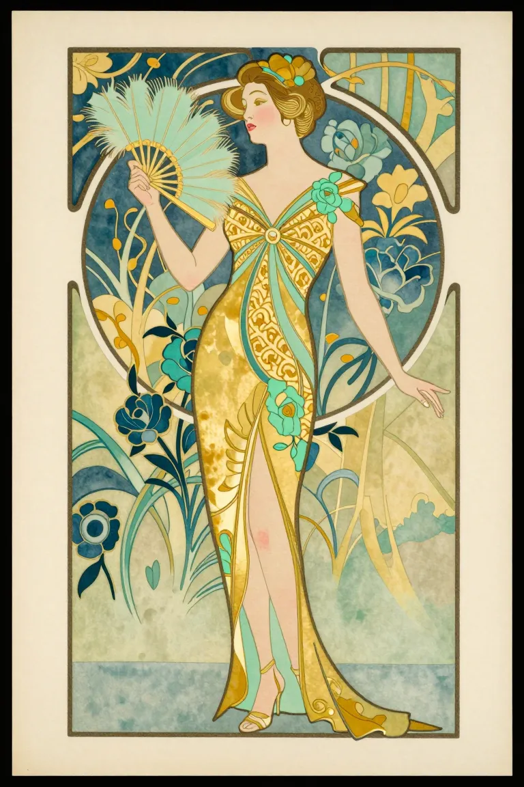

trykk · 1908–1935 · også: Pochoir, Sjablongkolorering, Art Deco-motebilde, Gazette du Bon Ton-stil
En plansje fargelagt for hånd gjennom et sett sjablonger, én for hver farge, i gouache og akvarell på en trykt nøkkellinje. Iribe og Lepape laget Poiret-albumene i 1908 og 1911; Barbier og Gazette du Bon Ton gjorde det til uttrykket i Art Deco-moten.

Kjerneidé
En sjablong og en pensel gir en flat, dekkende og lysende farge som ingen presse kan matche.
Designprinsipper
Trykk en tynn nøkkellinje i sort eller grått, og legg så hver farge på for hånd gjennom sin egen sjablong.
Bruk 4 til 30 flate, dekkende gouachefarger, med gull og sølv som aksenter.
Hold hvert fargefelt flatt og rent, med en myk kant der penselen møter sjablongen.
Bruk en slank, langstrakt figur i en enkel positur mot et stort felt av bart papir.
La én lys farge (en rose, en jade, en lakkrød) bære plansjen.
Legg til dekorativt mønster bare i kjolen eller i bakgrunnen, aldri i begge.
Antimønstre
Et rasterpunkt eller en gradient
Tykke, mørke konturer som i en tegneserie
En fullfarget bakgrunn som ikke lar noe papir stå bart